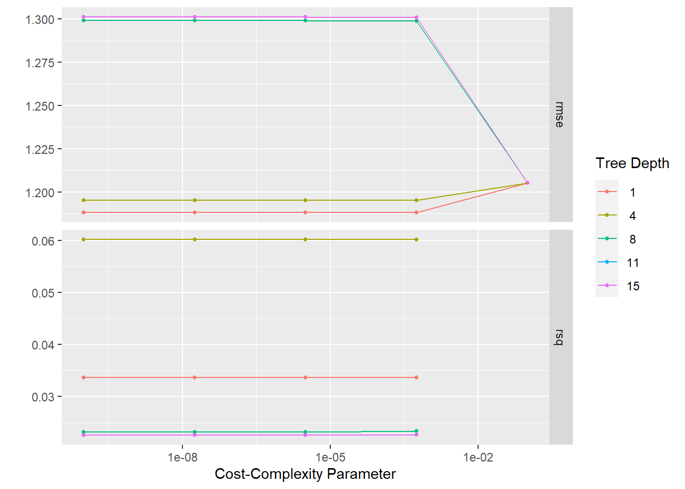
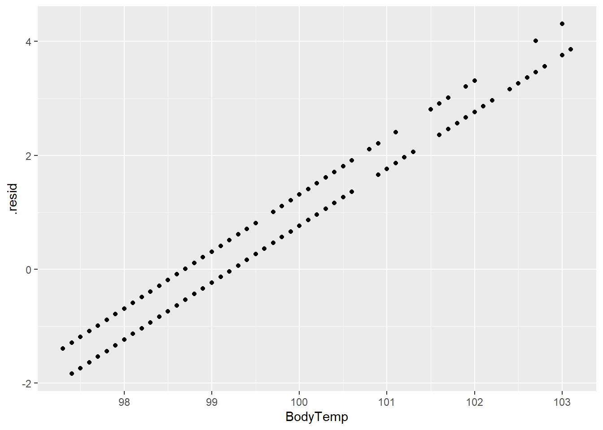

library(tidymodels)
library(tidyverse)
library(here)
library(rsample)
library(rpart.plot)
library(vip)
library(glmnet)
library(ranger)
library(ggplot2)
library(ggfortify)Machine Learning
This exercise is the fifth in flu analysis series. This page will follow the tidymodels method to train and fit three machine learning models on the main continuous outcome BodyTemp.
For the machine learning exercise, we will use the flu data and focus on Body Temperature as the outcome. We will be using the Decision Tree model, LASSO model, and Random forest model to determine the best performing model.
Load packages
Load data
#load data
filelocation <- here("fluanalysis", "data", "cleandata.rds")
load(filelocation)
#reassign as flu
flu <- cleandata
#remove columns with <50 entries in one category
flu <- flu %>%
select(!c("Vision","Hearing")) Data splitting
#establish reproducibility by setting the seed
set.seed(123)
#stratify data split to balance outcomes between data sets
data_split1 <- initial_split(flu, prop = 7/10, strata = BodyTemp)
#create two data sets with 70% of data in training set
train_data1 <- training(data_split1)
test_data1 <- testing(data_split1)Cross Validation & Workflow set up
#set seed for reproducibility
set.seed(123)
folds <- vfold_cv(train_data1, v = 5)
#create recipe for machine learning
#step_ functions create dummy variables and order the severity columns
ml_rec <- recipe(BodyTemp ~., data = train_data1) %>%
step_dummy(all_nominal_predictors()) %>%
step_ordinalscore()
#set linear regression
lm_mod <- linear_reg()
#create machine learning workflow
ml_wf <- workflow() %>%
add_model(lm_mod) %>%
add_recipe(ml_rec)Null model
We will use the null model as comparison for the other models. All other models should perform better than the null model since this model does not use any of the predictor variables.
#set null model using null_model() function
nullmod <- null_model() %>%
set_engine("parsnip") %>%
set_mode("regression")
#create null recipe
null_rec <- recipe(BodyTemp ~ ., data = train_data1)%>%
step_dummy(all_nominal_predictors()) %>%
step_ordinalscore()
#create null workflow
nullmodwf <- workflow() %>%
add_model(nullmod) %>%
add_recipe(null_rec)
#fit the null model to training data
nullmodfit <- nullmodwf %>%
fit(data = train_data1)The null model can be used to make predictions of the outcome, but without any predictors, the model will produce the mean body temperature for the training and test data. The rmse() function will produce the metric for this model.
#use null model to make predictions from training data
nullmod_predtrain <- augment(nullmodfit, train_data1) %>%
rmse(truth = BodyTemp, .pred)
nullmod_predtrain# A tibble: 1 × 3
.metric .estimator .estimate
<chr> <chr> <dbl>
1 rmse standard 1.21#use null model to make predictions from test data
nullmod_predtest <-augment(nullmodfit, test_data1) %>%
rmse(BodyTemp, .pred)
nullmod_predtest# A tibble: 1 × 3
.metric .estimator .estimate
<chr> <chr> <dbl>
1 rmse standard 1.16The training null model has a RMSE of 1.209 and the test null model performs slightly better with a RMSE of 1.163.
Model tuning and fitting
For each model, we will use the tune() function to find the best parameters during the cross-validation step. After finding the best model based on our performance metric RMSE, we will fit the best model.
Tree model specification
#set up decision tree model and tune the parameters
tune_spec <- decision_tree(
cost_complexity = tune(), #one parameter we will tune
tree_depth = tune() #another parameter
) %>%
set_engine("rpart") %>% #specify engine
set_mode("regression") #regression due to continuous outcomeTree model workflow
#create decision tree workflow
tree_wf <- workflow() %>%
add_model(tune_spec) %>%
add_recipe(ml_rec) #can use the general machine learning recipeTree model grid specification
The grid_regular() will produce values of the parameters that we test to find the best model. For each value of tree depth, 5 cost_complexity values will be tested.
#create grid of resampled values for cross-validation
tree_grid <- grid_regular(cost_complexity(),
tree_depth(),
levels = 5) #produces 5x5 = 25 combinationsTree model tuning with cross-validation
Cross-validation is required for tuning models. In order to find the best model, we can use resampled data from the training set to test the models against “new data” in order to see the variation within the model.
set.seed(123)
tree_res <- tree_wf %>%
tune_grid(
resamples = folds,
grid = tree_grid,
control = control_grid(save_pred = TRUE)
)! Fold1: internal: A correlation computation is required, but `estimate` is constant and ha...! Fold2: internal: A correlation computation is required, but `estimate` is constant and ha...! Fold3: internal: A correlation computation is required, but `estimate` is constant and ha...! Fold4: internal: A correlation computation is required, but `estimate` is constant and ha...! Fold5: internal: A correlation computation is required, but `estimate` is constant and ha...Plotting the resampled models produces a summary of the RMSE in the top row. A lower RMSE is preferred.
tree_res %>%
autoplot()
It would appear that the model with tree_depth = 1 has the best RMSE. ### Tree model performance To confirm the best performing tree model, we can use select_best() function and extract the metrics.
#select best tree model
best_tree <- tree_res %>% select_best("rmse")
best_tree# A tibble: 1 × 3
cost_complexity tree_depth .config
<dbl> <int> <chr>
1 0.0000000001 1 Preprocessor1_Model01#set up workflow
treefinal_wf <- tree_wf %>%
finalize_workflow(best_tree)
#fit the final model
treefinal_fit <- treefinal_wf %>%
fit(train_data1)
#extract RMSE value
treefinalfitted_rmse<- augment(treefinal_fit, train_data1) %>%
select(BodyTemp, .pred) %>%
rmse(truth = BodyTemp, .pred)The best performing tree model has a tree depth of 1 and and RMSE of 1.178 which is slightly better than the training null model of 1.209.
#save for later comparison: RMSE based on predictions from best model
tree_rmse <- tree_res %>%
collect_predictions(parameters = best_tree) %>%
rmse(BodyTemp, .pred) %>%
mutate(model = "Tree")
tree_rmse# A tibble: 1 × 4
.metric .estimator .estimate model
<chr> <chr> <dbl> <chr>
1 rmse standard 1.19 Tree The decision tree can be plotted using rpart.plot(). The level of importance for each predictor can be found using vip() function.
#extract engine and plot decision tree
treefinal_fit%>%
extract_fit_engine() %>%
rpart.plot(roundint = FALSE)
#plot importance of predictors
treefinal_fit %>%
extract_fit_parsnip() %>%
vip()
Plots for Tree model
We may also be interested in the predictions and residuals for the model compared to the actual outcomes. First, we need to create the predictions using augment() and the residuals using mutate().
#create predictions and residuals
tree_resd <- augment(treefinal_fit, train_data1) %>%
select(c(.pred, BodyTemp)) %>%
mutate(.resid = BodyTemp - .pred)
#plot body temperature and predictions
treeplot1 <- ggplot(tree_resd)+
geom_point(aes(BodyTemp, .pred))+
scale_x_continuous(limits = c(97,103.5))+
scale_y_continuous(limits = c(97,103.5))
treeplot1#plot body temperature and residuals
treeplot2 <- ggplot(tree_resd)+
geom_point(aes(BodyTemp,.resid))
treeplot2
The predictions and residuals show that the models do not perform well in predicting body temperature.
Compare model to null
As mentioned before, the tree model is only slightly better than the null model (RMSE of 1.88 (SE = 0.061) compared to 1.209). The fitted tree model has a RMSE of 1.178.
#metrics for best model
tree_res %>% show_best()Warning: No value of `metric` was given; metric 'rmse' will be used.# A tibble: 5 × 8
cost_complexity tree_depth .metric .estimator mean n std_err .config
<dbl> <int> <chr> <chr> <dbl> <int> <dbl> <chr>
1 0.0000000001 1 rmse standard 1.19 5 0.0613 Preprocesso…
2 0.0000000178 1 rmse standard 1.19 5 0.0613 Preprocesso…
3 0.00000316 1 rmse standard 1.19 5 0.0613 Preprocesso…
4 0.000562 1 rmse standard 1.19 5 0.0613 Preprocesso…
5 0.0000000001 4 rmse standard 1.20 5 0.0504 Preprocesso…treefinalfitted_rmse# A tibble: 1 × 3
.metric .estimator .estimate
<chr> <chr> <dbl>
1 rmse standard 1.18LASSO model specifications
Next we will look at the LASSO model following the same general steps as the decision tree model.
#set LASSO model
lm_modLASSO <- linear_reg(penalty = tune(), #penalties given for number of predictors
mixture = 1) %>%
set_engine("glmnet")LASSO model workflow
#set LASSO workflow
LASS_wf <- workflow() %>%
add_model(lm_modLASSO) %>%
add_recipe(ml_rec)LASSO model grid specifications
We will use a similar grid method as before in order to tune the parameters of the models.
#create LASSO grid
LASS_grid <-tibble(penalty = 10^seq(-4, -1, length.out = 30)) #creates a grid of penalty values to tune
LASS_grid %>% top_n(-5) #lowest penalty valuesSelecting by penalty# A tibble: 5 × 1
penalty
<dbl>
1 0.0001
2 0.000127
3 0.000161
4 0.000204
5 0.000259Penalties will be highest for models with the most predictors.
LASSO model tuning with cross-validation
set.seed(123)
LASS_res <-
LASS_wf %>%
tune_grid(folds, #cross-validation
grid = LASS_grid, #penalty grid
control = control_grid(save_pred = TRUE), #save CV predictions to use later
metrics = metric_set(rmse)) #RMSE as metricWe can plot the metrics against penalty values.
LASS_plot <-
LASS_res %>%
autoplot()
LASS_plot We would like the lowest RMSE and the lowest penalty, so the best model should have an RMSE around 1.15.
LASSO model performance
Using select_best() function and extracting the metrics will give us the model performance measure.
#show top performing models
LASS_showbest <- LASS_res %>% show_best()
#select best model
best_LASS_model <- LASS_res %>%
select_best("rmse")
best_LASS_model# A tibble: 1 × 2
penalty .config
<dbl> <chr>
1 0.0386 Preprocessor1_Model26#update workflow with best model
LASSfinal_wf <- LASS_wf %>%
finalize_workflow(best_LASS_model)
#fit the model to the training data
LASSfinal_fit <- LASSfinal_wf %>%
fit(train_data1)
#collect final RMSE
LASSfinalfitted_rmse<- augment(LASSfinal_fit, train_data1) %>%
select(BodyTemp, .pred) %>%
rmse(truth = BodyTemp, .pred)The LASSO model (RMSE = 1.117) performed better than the decision tree model (1.187) and the null model (1.209).
#save for later comparison: RMSE based on predictions from best model
LASS_rmse <- LASS_res %>%
collect_predictions(parameters = best_LASS_model) %>%
rmse(BodyTemp, .pred) %>%
mutate(model = "LASSO")
LASS_rmse# A tibble: 1 × 4
.metric .estimator .estimate model
<chr> <chr> <dbl> <chr>
1 rmse standard 1.15 LASSOPlots for LASSO model
We can again plot the predictions and residuals against the outcome.
#create predictions and residuals
LASS_resd <- augment(LASSfinal_fit, train_data1) %>%
select(c(.pred, BodyTemp)) %>%
mutate(.resid = BodyTemp - .pred)#plots LASSO predictions and body temperature
LASS_plot1 <- ggplot(LASS_resd)+
geom_point(aes(BodyTemp, .pred))+
scale_x_continuous(limits = c(97,103.5))+
scale_y_continuous(limits = c(97,103.5))
LASS_plot1#plots residuals and body temperature
LASS_plot2 <- ggplot(LASS_resd)+
geom_point(aes(BodyTemp,.resid))
LASS_plot2
The prediction and residual plots show a better performance than the other two models we have looked at so far.
Compare model to null model
As mentioned, the LASSO model performs better than the null mode with a RMSE of 1.148 (SE = 0.0534) compared the null model (1.209). The fitted LASSO model has an RMSE of 1.117.
LASS_res %>%
show_best() # A tibble: 5 × 7
penalty .metric .estimator mean n std_err .config
<dbl> <chr> <chr> <dbl> <int> <dbl> <chr>
1 0.0386 rmse standard 1.15 5 0.0534 Preprocessor1_Model26
2 0.0489 rmse standard 1.15 5 0.0542 Preprocessor1_Model27
3 0.0304 rmse standard 1.15 5 0.0528 Preprocessor1_Model25
4 0.0621 rmse standard 1.15 5 0.0552 Preprocessor1_Model28
5 0.0240 rmse standard 1.15 5 0.0524 Preprocessor1_Model24LASSfinalfitted_rmse# A tibble: 1 × 3
.metric .estimator .estimate
<chr> <chr> <dbl>
1 rmse standard 1.12Random forest model specifications
Finally, following the same steps are above, we can look at random forest models using cross-validation and tuning to find the best model.
#how many cores your computer can use for running tuning on multiple models at the same time
cores <- parallel::detectCores()
#set up random forest model
rf_mod <- rand_forest(mtry = tune(), #parameter to tune
min_n = tune(), #parameter to tune
trees = 1000) %>%
set_engine("ranger", num.threads = cores) %>%
set_mode("regression")Random forest model workflow
#create random forest recipe
rf_rec <- recipe(BodyTemp ~ ., data = train_data1) %>%
step_dummy(all_nominal_predictors()) %>%
step_ordinalscore()
#create workflow
rf_wf <- workflow() %>%
add_model(rf_mod) %>%
add_recipe(rf_rec)Random forest model grid specifications/tuning with cross-validation
We will use a similar grid method for tuning model parameters
#create grid for tuning parameters for cross-validation
set.seed(123)
rf_res <- rf_wf %>%
tune_grid(folds,
grid = 25, #25 models
control = control_grid(save_pred = TRUE),
metrics = metric_set(rmse))i Creating pre-processing data to finalize unknown parameter: mtryWe can look at the best random forest models by RMSE values.
#show top performing models
rf_showbest <- rf_res %>% show_best()
rf_showbest# A tibble: 5 × 8
mtry min_n .metric .estimator mean n std_err .config
<int> <int> <chr> <chr> <dbl> <int> <dbl> <chr>
1 8 37 rmse standard 1.16 5 0.0574 Preprocessor1_Model25
2 4 14 rmse standard 1.16 5 0.0589 Preprocessor1_Model06
3 3 23 rmse standard 1.16 5 0.0603 Preprocessor1_Model13
4 13 35 rmse standard 1.16 5 0.0564 Preprocessor1_Model15
5 7 12 rmse standard 1.17 5 0.0559 Preprocessor1_Model18The best performing model has mtry (number of predictors at each node) = 8, min_n (min number of data points required to split) = 37 and RMSE of 1.158 (SE = 0.057). This is a better performing model compared to the null and other models.
The autoplot() function visually shows the performance of the various models.
rf_res %>% autoplot()We will extract the best model from the group using select_best().
#extract best model
rf_best <-
rf_res %>%
select_best(metric = "rmse")
#show results
rf_best# A tibble: 1 × 3
mtry min_n .config
<int> <int> <chr>
1 8 37 Preprocessor1_Model25#collect predictions of best random forest model and calculate RMSE
#save for later comparison: RMSE based on predictions from best model
rf_rmse <-
rf_res %>%
collect_predictions(parameters = rf_best) %>%
rmse(truth = BodyTemp, estimate = .pred) %>%
mutate(model = "Random Forest")
rf_rmse# A tibble: 1 × 4
.metric .estimator .estimate model
<chr> <chr> <dbl> <chr>
1 rmse standard 1.16 Random ForestUsing the best random forest model, the RMSE is 1.163 which is similar to the LASSO model.
Final fit for random forest model
Now we can fit the model to the training data to get the final RMSE value.
#set random forest model using best model parameters
rffinal_mod <-
rand_forest(mtry = 8, min_n = 37, trees = 1000) %>%
set_engine("ranger", num.threads = cores, importance = "impurity") %>%
set_mode("regression")
#update workflow
rffinal_wf <- rf_wf %>%
update_model(rffinal_mod)
#fit to training data
rffinal_fit <- rffinal_wf %>%
fit(train_data1)
#pull RMSE from fitted model
rffinalfitted_rmse <- augment(rffinal_fit, train_data1) %>%
select(BodyTemp, .pred) %>%
rmse(truth = BodyTemp, .pred)The fitted random forest model RMSE is 1.028 which is slightly better than the LASSO model and better than the null and decision tree models.
We can also look at the important predictors for the random forest model using vip() function`
rffinal_fit %>%
extract_fit_parsnip() %>%
vip(num_features = 20)Sneezing remains as the most important predictor for body temperature followed closely by subjective fever.
Plots for Random forest model
We will again plot the predictions and residuals for the model using augment().
#create predictions and residuals
rf_resd <- augment(rffinal_fit, train_data1) %>%
select(c(.pred, BodyTemp)) %>%
mutate(.resid = BodyTemp - .pred)
#plot body temperature and predictions
rf_plot1 <- ggplot(rf_resd)+
geom_point(aes(BodyTemp,.pred))
rf_plot1#plot body temperature and residuals
rf_plot2 <- ggplot(rf_resd)+
geom_point(aes(BodyTemp, .resid))
rf_plot2The residuals and prediction plots look similar to the LASSO model.
Compare model to null model
rf_res %>% show_best() %>% arrange(mean) %>% top_n(1)Selecting by .config# A tibble: 1 × 8
mtry min_n .metric .estimator mean n std_err .config
<int> <int> <chr> <chr> <dbl> <int> <dbl> <chr>
1 8 37 rmse standard 1.16 5 0.0574 Preprocessor1_Model25Compared to the null, the random forest model is a better predictor of body temperature with a RMSE of 1.158 (SE = 0.057) compared to 1.209.
Choosing best model
Now that we have looked at all of the models, we can choose the best model to test with our test_data1 data set which has not been used during the tuning/fitting process.
#create comparison tibble for three models
compare <- bind_rows(tree_rmse,LASS_rmse,rf_rmse)
compare# A tibble: 3 × 4
.metric .estimator .estimate model
<chr> <chr> <dbl> <chr>
1 rmse standard 1.19 Tree
2 rmse standard 1.15 LASSO
3 rmse standard 1.16 Random ForestBased on the RMSE metric, the best performing models are the LASSO and Random forest models. We can also check the uncertainty by looking at the plots shown above and the standard error.
LASS_showbest %>% head(1)# A tibble: 1 × 7
penalty .metric .estimator mean n std_err .config
<dbl> <chr> <chr> <dbl> <int> <dbl> <chr>
1 0.0386 rmse standard 1.15 5 0.0534 Preprocessor1_Model26rf_showbest %>% head(1)# A tibble: 1 × 8
mtry min_n .metric .estimator mean n std_err .config
<int> <int> <chr> <chr> <dbl> <int> <dbl> <chr>
1 8 37 rmse standard 1.16 5 0.0574 Preprocessor1_Model25Since the LASSO model has a lower SE than the random forest model, we will choose the LASSO model for testing the model on new data.
Final evaluation
Now we can fit the LASSO model to the test data to check the RMSE on “new data”.
LASStest_fit <-
LASSfinal_wf %>%
last_fit(data_split1)
LASStest_fit %>% collect_metrics()# A tibble: 2 × 4
.metric .estimator .estimate .config
<chr> <chr> <dbl> <chr>
1 rmse standard 1.16 Preprocessor1_Model1
2 rsq standard 0.0297 Preprocessor1_Model1With the test data, the model has a RMSE of 1.16 which is slightly worse than the fitted model. This would make sense as the fitted model is designed off the train_data1 set.
We will plot the same prediction and residual plots as before using the test_data1 outcomes. They will look pretty similar to the fitted LASSO model since the RMSE is similar.
#create predictions and residuals for test data
LASStest_resd <- augment(LASStest_fit) %>%
select(c(.pred, BodyTemp)) %>%
mutate(.resid = BodyTemp - .pred)#plots LASSO predictions and body temperature for test data
LASS_plot3 <- ggplot(LASS_resd)+
geom_point(aes(BodyTemp, .pred))+
scale_x_continuous(limits = c(97,103.5))+
scale_y_continuous(limits = c(97,103.5))
LASS_plot3
#plots residuals and body temperature for test data
LASS_plot4 <- ggplot(LASS_resd)+
geom_point(aes(BodyTemp,.resid))
LASS_plot4